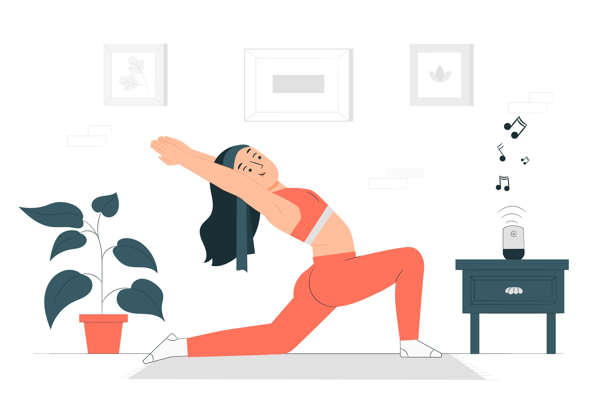

Fitness
Welcome to our Fitness section. Here, you'll find tips, workouts, and advice to help you stay fit and healthy.
Exercise Routines for Different Fitness Levels
Whether you are a beginner or a seasoned athlete, having the right exercise routine is crucial for reaching your fitness goals. Here are some tailored routines:
Beginner Routine
- Brisk walking or light jogging - 20 minutes
- Bodyweight exercises: Squats, push-ups, and lunges - 2 sets of 10 reps each
- Stretching - 10 minutes
Intermediate Routine
- Running or cycling - 30 minutes
- Strength training: Free weights or resistance bands - 3 sets of 12 reps
- Core exercises: Planks, crunches - 3 sets of 15 reps each
- Stretching and cool down - 10 minutes
Advanced Routine
- High-intensity interval training (HIIT) - 30 minutes
- Advanced strength training: Compound exercises - 4 sets of 8-10 reps
- Flexibility training: Yoga or dynamic stretches - 20 minutes
Tips for Staying Motivated with Physical Activity
Maintaining motivation can be challenging, but these tips can help you stay on track:
- Set realistic and achievable goals.
- Find a workout buddy or join a fitness class.
- Track your progress to see how far you've come.
- Mix up your routine to keep things interesting.
- Reward yourself for reaching milestones.
- Stay positive and focus on the benefits of staying active.
Advantages of Exercising Regularly
Regular exercise has numerous benefits for your body and mind. Here are some key advantages:
- Improved cardiovascular health: Regular exercise strengthens your heart and improves circulation.
- Increased strength and endurance: Consistent physical activity enhances muscle strength and stamina.
- Better mental health: Exercise releases endorphins, which can help reduce stress and anxiety.
- Weight management: Regular activity helps maintain a healthy weight and can assist in weight loss.
- Enhanced sleep quality: Exercise can contribute to better sleep patterns and overall quality of rest.
- Improved overall quality of life: Being active boosts energy levels, enhances mood, and contributes to a more positive outlook on life.